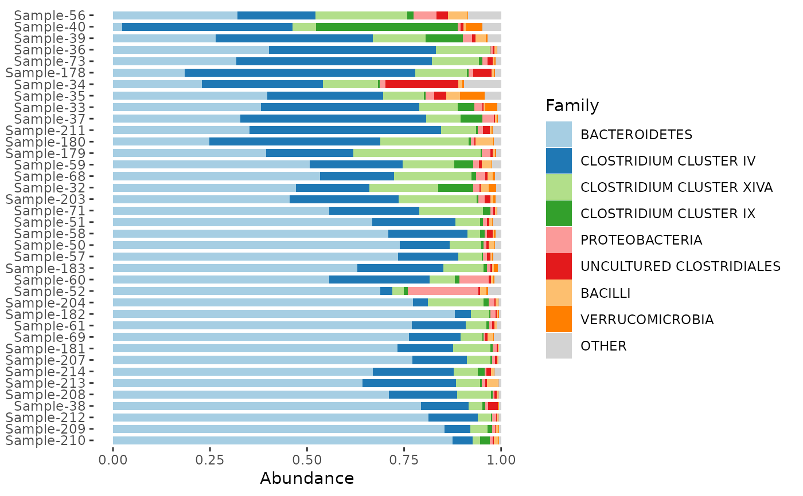
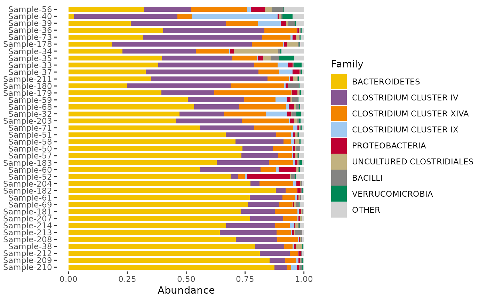
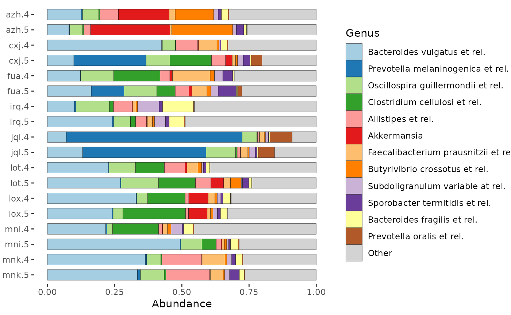
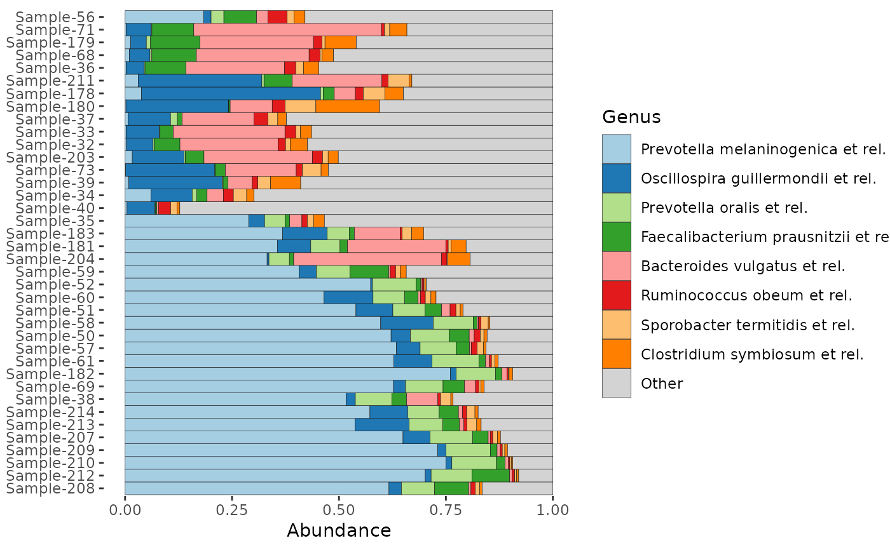
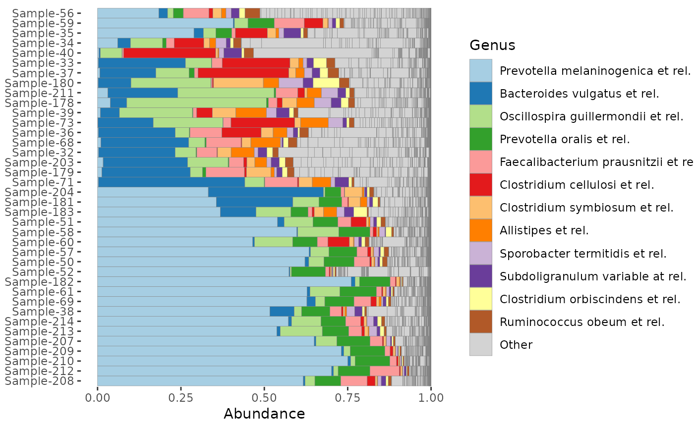
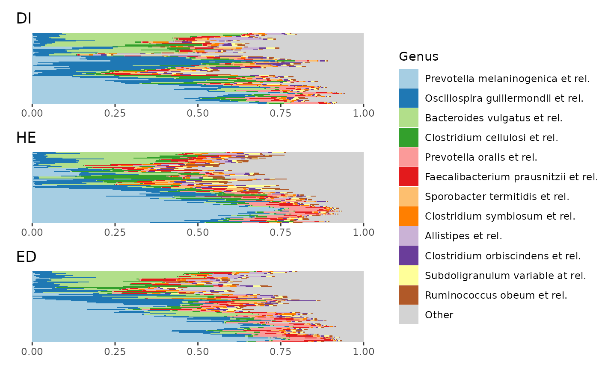
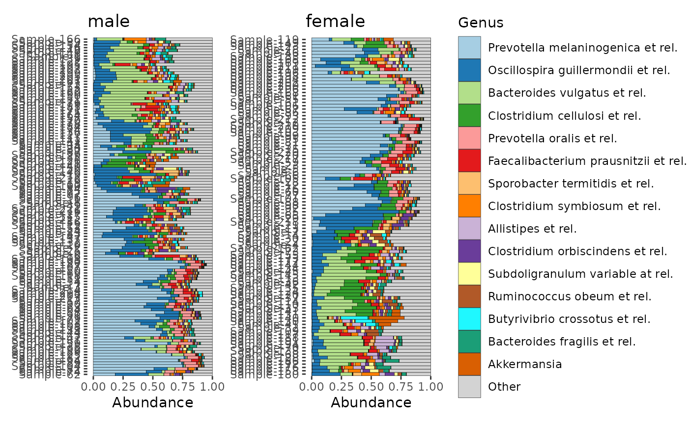

Stacked barplots showing composition of phyloseq samples for a specified number of coloured taxa.
Normally your phyloseq object should contain counts data,
as by default comp_barplot() performs the "compositional" taxa transformation for you,
and requires count input for some sample_order methods!
comp_barplot(
ps,
tax_level,
n_taxa = 8,
tax_order = sum,
merge_other = TRUE,
taxon_renamer = function(x) identity(x),
sample_order = "bray",
order_with_all_taxa = FALSE,
label = "SAMPLE",
group_by = NA,
facet_by = NA,
bar_width = 1,
bar_outline_colour = "grey5",
bar_outline_width = 0.1,
palette = distinct_palette(n_taxa),
tax_transform_for_ordering = "identity",
tax_transform_for_plot = "compositional",
seriate_method = "OLO_ward",
keep_all_vars = TRUE,
interactive = FALSE,
max_taxa = 10000,
other_name = "Other",
x = "SAMPLE",
counts_warn = TRUE,
...
)phyloseq object
taxonomic aggregation level (from rank_names(ps))
how many taxa to show distinct colours for (all others grouped into "Other")
order of taxa within the bars, either a function for tax_sort (e.g. sum), or a vector of (all) taxa names at tax_level to set order manually
if FALSE, taxa coloured/filled as "other" remain distinct, and so can have bar outlines drawn around them
function that takes taxon names and returns modified names for legend
vector of sample names; or any distance measure in dist_calc that doesn't require phylogenetic tree; or "asis" for the current order as is returned by phyloseq::sample_names(ps)
if TRUE, this will always use all taxa (not just the top n_taxa) to calculate any distances needed for sample ordering
name of variable to use for labelling samples, or "SAMPLE" for sample names
splits dataset by this variable (must be categorical)
resulting in a list of plots, one for each level of the group_by variable.
facets plots by this variable (must be categorical). If group_by is also set the faceting will occur separately in the plot for each group.
default 1 avoids random gapping otherwise seen with many samples (set to less than 1 to introduce gaps between samples)
line colour separating taxa and samples (use NA for no outlines)
width of line separating taxa and samples (for no outlines set bar_outline_colour = NA)
palette for taxa fill colours
transformation of taxa values used before ordering samples by similarity
default "compositional" draws proportions of total counts per sample, but you could reasonably use another transformation, e.g. "identity", if you have truly quantitative microbiome profiling data
name of any ordering method suitable for distance matrices (see ?seriation::seriate)
FALSE may speed up internal melting with ps_melt for large phyloseq objects but TRUE is required for some post-hoc plot customisation
creates plot suitable for use with ggiraph
maximum distinct taxa groups to show (only really useful for limiting complexity of interactive plots e.g. within ord_explore)
name for other taxa after N
name of variable to use as x aesthetic: it probably only makes sense to change this when also using facets (check only one sample is represented per bar!)
should a warning be issued if counts are unavailable? TRUE, FALSE, or "error" (passed to ps_get)
extra arguments passed to facet_wrap() (if facet_by is not NA)
ggplot or list of harmonised ggplots
sample_order: Either specify a list of sample names to order manually, or the bars/samples can/will be sorted by similarity, according to a specified distance measure (default 'bray'-curtis),
seriate_method specifies a seriation/ordering algorithm (default Ward hierarchical clustering with optimal leaf ordering, see seriation::list_seriation_methods())
group_by: You can group the samples on distinct plots by levels of a variable in the phyloseq object. The list of ggplots produced can be arranged flexibly with the patchwork package functions. If you want to group by several variables you can create an interaction variable with interaction(var1, var2) in the phyloseq sample_data BEFORE using comp_barplot.
facet_by can allow faceting of your plot(s) by a grouping variable. Using this approach is less flexible than using group_by but means you don't have to arrange a list of plots yourself like with the group_by argument. Using facet_by is equivalent to adding a call to facet_wrap(facets = facet_by, scales = "free") to your plot(s). Calling facet_wrap() yourself is itself a more flexible option as you can add other arguments like the number of rows etc. However you must use keep_all_vars = TRUE if you will add faceting manually.
bar_width: No gaps between bars, unless you want them (decrease width argument to add gaps between bars).
bar_outline_colour: Bar outlines default to "grey5" for almost black outlines. Use NA if you don't want outlines.
merge_other: controls whether bar outlines can be drawn around individual (lower abundance) taxa that are grouped in "other" category. If you want to see the diversity of taxa in "other" use merge_taxa = FALSE, or use TRUE if you prefer the cleaner merged look
palette: Default colouring is consistent across multiple plots if created with the group_by argument, and the defaults scheme retains the colouring of the most abundant taxa irrespective of n_taxa
library(ggplot2)
data(dietswap, package = "microbiome")
# illustrative simple customised example
dietswap %>%
ps_filter(timepoint == 1) %>%
comp_barplot(
tax_level = "Family", n_taxa = 8,
bar_outline_colour = NA,
sample_order = "bray",
bar_width = 0.7,
taxon_renamer = toupper
) + coord_flip()
#> Registered S3 method overwritten by 'seriation':
#> method from
#> reorder.hclust vegan

# change colour palette with the distinct_palette() function
# remember to set the number of colours to the same as n_taxa argument!
dietswap %>%
ps_filter(timepoint == 1) %>%
comp_barplot(
tax_level = "Family", n_taxa = 8,
bar_outline_colour = NA,
sample_order = "bray",
bar_width = 0.7,
palette = distinct_palette(8, pal = "kelly"),
taxon_renamer = toupper
) + coord_flip()

# Order samples by the value of one of more sample_data variables.
# Use ps_arrange and set sample_order = "default" in comp_barplot.
# ps_mutate is also used here to create an informative variable for axis labelling
dietswap %>%
ps_mutate(subject_timepoint = interaction(subject, timepoint)) %>%
ps_filter(nationality == "AAM", group == "DI", sex == "female") %>%
ps_arrange(desc(subject), desc(timepoint)) %>%
comp_barplot(
tax_level = "Genus", n_taxa = 12,
sample_order = "default",
bar_width = 0.7,
bar_outline_colour = "black",
order_with_all_taxa = TRUE,
label = "subject_timepoint"
) + coord_flip()

# Order taxa differently:
# By default, taxa are ordered by total sum across all samples
# You can set a different function for calculating the order, e.g. median
dietswap %>%
ps_filter(timepoint == 1) %>%
comp_barplot(tax_level = "Genus", tax_order = median) +
coord_flip()

# Or you can set the taxa order up front, with tax_sort() and use it as is
dietswap %>%
ps_filter(timepoint == 1) %>%
tax_sort(at = "Genus", by = sum) %>%
comp_barplot(tax_level = "Genus", tax_order = "asis") +
coord_flip()
# how many taxa are in those light grey "other" bars?
# set merge_other to find out (& remember to set a bar_outline_colour)
dietswap %>%
ps_filter(timepoint == 1) %>%
comp_barplot(
tax_level = "Genus", n_taxa = 12, merge_other = FALSE, bar_outline_colour = "grey50",
) +
coord_flip()

# Often to compare groups, average compositions are presented
p1 <- phyloseq::merge_samples(dietswap, group = "group") %>%
comp_barplot(
tax_level = "Genus", n_taxa = 12,
sample_order = c("ED", "HE", "DI"),
bar_width = 0.8
) +
coord_flip() + labs(x = NULL, y = NULL)
#> Warning: NAs introduced by coercion
p1
# However that "group-averaging" approach hides a lot of within-group variation
p2 <- comp_barplot(dietswap,
tax_level = "Genus", n_taxa = 12, group_by = "group",
sample_order = "euclidean", bar_outline_colour = NA
) %>%
patchwork::wrap_plots(nrow = 3, guides = "collect") &
coord_flip() & labs(x = NULL, y = NULL) &
theme(axis.text.y = element_blank(), axis.ticks.y = element_blank())
p2

# Only from p2 you can see that the apparently higher average relative abundance
# of Oscillospira in group DI is probably driven largely by a subgroup
# of DI samples with relatively high Oscillospira.
# make a list of 2 harmonised composition plots (grouped by sex)
p <- comp_barplot(dietswap,
n_taxa = 15, tax_level = "Genus",
bar_outline_colour = "black", merge_other = TRUE,
sample_order = "aitchison", group_by = "sex"
)
# plot them side by side with patchwork package
patch <- patchwork::wrap_plots(p, ncol = 2, guides = "collect")
patch & coord_flip() # make bars in all plots horizontal (note: use & instead of +)

# beautifying tweak #
# modify one plot in place (flip the order of the samples in the 2nd plot)
# notice that the scaling is for the x-axis
# (that's because coord_flip is used afterwards when displaying the plots
patch[[2]] <- patch[[2]] + scale_x_discrete(limits = rev)
#> Scale for x is already present.
#> Adding another scale for x, which will replace the existing scale.
# Explainer: rev() function takes current limits and reverses them.
# You could also pass a completely arbitrary order, naming all samples
# you can theme all plots with the & operator
patch & coord_flip() &
theme(axis.text.y = element_text(size = 5), legend.text = element_text(size = 6))
# See https://patchwork.data-imaginist.com/index.html